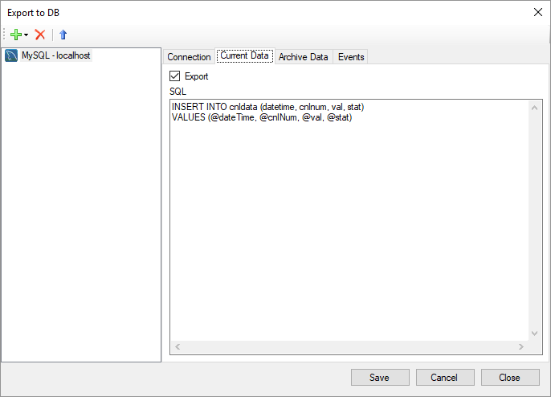

Export to Database Module
Overview
The module provides real-time export data, which received from devices, in the popular databases. The supported DBMS are Microsoft SQL Server, Oracle, PostgreSQL and MySQL. This module is included in the Rapid SCADA installation package and does not require separate installation. The module library file is ModDBExport.dll.
Configuring
In a project go to the Modules page, activate the ModDBExport.dll module and open its properties. The module supports export in several different databases in parallel. To add a database, click the  button. The Connection page contains the parameters for connecting to the database. Specify the SQL queries on the Current Data, Archive Data and Events pages. These queries are executed by the module when new data is received by Server. The database, which is an export target, must be created and contain appropriate tables for storing data.
button. The Connection page contains the parameters for connecting to the database. Specify the SQL queries on the Current Data, Archive Data and Events pages. These queries are executed by the module when new data is received by Server. The database, which is an export target, must be created and contain appropriate tables for storing data.


If some data was not timely exported, for example, if a database is unavailable, the data can be transferred in manual mode. The manual export form is opened by the  button. To make manaul export possible, create the corresponding output channels in the configuration database and specify them on the form.
button. To make manaul export possible, create the corresponding output channels in the configuration database and specify them on the form.

Examples of Tables and SQL Queries
Microsoft SQL Server
-- Delete channel data table if it exists
IF OBJECT_ID('CnlData', 'U') IS NOT NULL
DROP TABLE CnlData;
-- Create channel data table
CREATE TABLE CnlData (
DateTime datetime2 NOT NULL,
CnlNum int NOT NULL,
Val float NOT NULL,
Stat int NOT NULL,
PRIMARY KEY (DateTime, CnlNum)
);
CREATE INDEX idx_CnlData_CnlNum ON CnlData (CnlNum);
-- Delete events table if it exists
IF OBJECT_ID('Events', 'U') IS NOT NULL
DROP TABLE Events;
-- Create events table
CREATE TABLE Events (
DateTime datetime2 NOT NULL,
ObjNum int NOT NULL,
KPNum int NOT NULL,
ParamID int NOT NULL,
CnlNum int NOT NULL,
OldCnlVal float NOT NULL,
OldCnlStat int NOT NULL,
NewCnlVal float NOT NULL,
NewCnlStat int NOT NULL,
Checked bit NOT NULL,
UserID int NOT NULL,
Descr char(100),
Data char(50)
);
CREATE INDEX idx_Events_DateTime ON Events (DateTime);
CREATE INDEX idx_Events_ObjNum ON Events (ObjNum);
CREATE INDEX idx_Events_KPNum ON Events (KPNum);
CREATE INDEX idx_Events_CnlNum ON Events (CnlNum);
-- Insert current data
INSERT INTO CnlData (DateTime, CnlNum, Val, Stat)
VALUES (@dateTime, @cnlNum, @val, @stat)
-- Insert or update existing archive data
MERGE CnlData AS target
USING (SELECT @dateTime, @cnlNum) AS source (DateTime, CnlNum)
ON (target.DateTime = source.DateTime AND target.CnlNum = source.CnlNum)
WHEN MATCHED THEN
UPDATE SET Val = @val, Stat = @stat
WHEN NOT MATCHED THEN
INSERT (DateTime, CnlNum, Val, Stat)
VALUES (@dateTime, @cnlNum, @val, @stat);
-- Insert event
INSERT INTO Events (DateTime, ObjNum, KPNum, ParamID, CnlNum, OldCnlVal, OldCnlStat, NewCnlVal, NewCnlStat, Checked, UserID, Descr, Data)
VALUES (@dateTime, @objNum, @kpNum, @paramID, @cnlNum, @oldCnlVal, @oldCnlStat, @newCnlVal, @newCnlStat, @checked, @userID, @descr, @data)
Oracle
-- Delete channel data table if it exists
BEGIN
EXECUTE IMMEDIATE 'DROP TABLE cnldata';
EXCEPTION
WHEN OTHERS THEN
IF SQLCODE != -942 THEN
RAISE;
END IF;
END;
-- Create channel data table
CREATE TABLE cnldata (
datetime TIMESTAMP NOT NULL,
cnlnum INTEGER NOT NULL,
val FLOAT NOT NULL,
stat INTEGER NOT NULL,
PRIMARY KEY (datetime, cnlnum)
);
CREATE INDEX idx_cnldata_cnlnum ON cnldata (cnlnum);
-- Delete events table if it exists
BEGIN
EXECUTE IMMEDIATE 'DROP TABLE events';
EXCEPTION
WHEN OTHERS THEN
IF SQLCODE != -942 THEN
RAISE;
END IF;
END;
-- Create events table
CREATE TABLE events (
datetime TIMESTAMP NOT NULL,
objnum INTEGER NOT NULL,
kpnum INTEGER NOT NULL,
paramid INTEGER NOT NULL,
cnlnum INTEGER NOT NULL,
oldcnlval FLOAT NOT NULL,
oldcnlstat INTEGER NOT NULL,
newcnlval FLOAT NOT NULL,
newcnlstat INTEGER NOT NULL,
checked INTEGER NOT NULL,
userid INTEGER NOT NULL,
descr CHAR(100),
data CHAR(50)
);
CREATE INDEX idx_events_datetime ON events (datetime);
CREATE INDEX idx_events_objnum ON events (objnum);
CREATE INDEX idx_events_kpnum ON events (kpnum);
CREATE INDEX idx_events_cnlnum ON events (cnlnum);
-- Insert current data
INSERT INTO cnldata (datetime, cnlnum, val, stat)
VALUES (:dateTime, :cnlNum, @val, :stat)
-- Insert or update existing archive data
MERGE INTO cnldata
USING dual ON (datetime = :dateTime AND cnlnum = :cnlnum)
WHEN MATCHED THEN
UPDATE SET val = :val, stat = :stat
WHEN NOT MATCHED THEN
INSERT (datetime, cnlnum, val, stat)
VALUES (:dateTime, :cnlNum, :val, :stat)
-- Insert event
INSERT INTO events (datetime, objnum, kpnum, paramid, cnlnum, oldcnlval, oldcnlstat, newcnlval, newcnlstat, checked, userid, descr, data)
VALUES (:dateTime, :objNum, :kpNum, :paramID, :cnlNum, :oldCnlVal, :oldCnlStat, :newCnlVal, :newCnlStat, :checked, :userID, :descr, :data)
PostgreSQL
-- Delete channel data table if it exists
DROP TABLE IF EXISTS cnldata;
-- Create channel data table
CREATE TABLE cnldata (
datetime timestamp NOT NULL,
cnlnum integer NOT NULL,
val double precision NOT NULL,
stat integer NOT NULL,
PRIMARY KEY (datetime, cnlnum)
);
CREATE INDEX ON cnldata (cnlnum);
-- Delete events table if it exists
DROP TABLE IF EXISTS events;
-- Create events table
CREATE TABLE events (
datetime timestamp NOT NULL,
objnum integer NOT NULL,
kpnum integer NOT NULL,
paramid integer NOT NULL,
cnlnum integer NOT NULL,
oldcnlval double precision NOT NULL,
oldcnlstat integer NOT NULL,
newcnlval double precision NOT NULL,
newcnlstat integer NOT NULL,
checked boolean NOT NULL,
userid integer NOT NULL,
descr char(100),
data char(50)
);
CREATE INDEX ON events (datetime);
CREATE INDEX ON events (objnum);
CREATE INDEX ON events (kpnum);
CREATE INDEX ON events (cnlnum);
-- Insert current data
INSERT INTO cnldata (datetime, cnlnum, val, stat)
VALUES (@dateTime, @cnlNum, @val, @stat)
-- Insert or update existing archive data
WITH upsert AS (UPDATE cnldata SET val = @val, stat = @stat
WHERE datetime = @datetime AND cnlnum = @cnlNum RETURNING *)
INSERT INTO cnldata (datetime, cnlnum, val, stat)
SELECT @dateTime, @cnlNum, @val, @stat
WHERE NOT EXISTS (SELECT * FROM upsert)
-- Insert event
INSERT INTO events (datetime, objnum, kpnum, paramid, cnlnum, oldcnlval, oldcnlstat, newcnlval, newcnlstat, checked, userid, descr, data)
VALUES (@dateTime, @objNum, @kpNum, @paramID, @cnlNum, @oldCnlVal, @oldCnlStat, @newCnlVal, @newCnlStat, @checked, @userID, @descr, @data)
MySQL
-- Delete channel data table if it exists
DROP TABLE IF EXISTS cnldata;
-- Create channel data table
CREATE TABLE cnldata (
datetime DATETIME NOT NULL,
cnlnum INT NOT NULL,
val DOUBLE NOT NULL,
stat SMALLINT UNSIGNED NOT NULL,
PRIMARY KEY (datetime, cnlnum)
) ENGINE=InnoDB;
CREATE INDEX idx_cnldata_cnlnum ON cnldata (cnlnum);
-- Delete events table if it exists
DROP TABLE IF EXISTS events;
-- Create events table
CREATE TABLE events (
datetime DATETIME NOT NULL,
objnum INT NOT NULL,
kpnum INT NOT NULL,
paramid INT NOT NULL,
cnlnum INT NOT NULL,
oldcnlval DOUBLE NOT NULL,
oldcnlstat SMALLINT UNSIGNED NOT NULL,
newcnlval DOUBLE NOT NULL,
newcnlstat SMALLINT UNSIGNED NOT NULL,
checked TINYINT UNSIGNED NOT NULL,
userid INT NOT NULL,
descr CHAR(100),
data CHAR(50)
) ENGINE=InnoDB;
CREATE INDEX idx_events_datetime ON events (datetime);
CREATE INDEX idx_events_objnum ON events (objnum);
CREATE INDEX idx_events_kpnum ON events (kpnum);
CREATE INDEX idx_events_cnlnum ON events (cnlnum);
-- Insert current data
INSERT INTO cnldata (datetime, cnlnum, val, stat)
VALUES (@dateTime, @cnlNum, @val, @stat)
-- Insert or update existing archive data
INSERT INTO cnldata (datetime, cnlnum, val, stat)
VALUES (@dateTime, @cnlNum, @val, @stat)
ON DUPLICATE KEY UPDATE val = @val, stat = @stat
-- Insert event
INSERT INTO events (datetime, objnum, kpnum, paramid, cnlnum, oldcnlval, oldcnlstat, newcnlval, newcnlstat, checked, userid, descr, data)
VALUES (@dateTime, @objNum, @kpNum, @paramID, @cnlNum, @oldCnlVal, @oldCnlStat, @newCnlVal, @newCnlStat, @checked, @userID, @descr, @data)